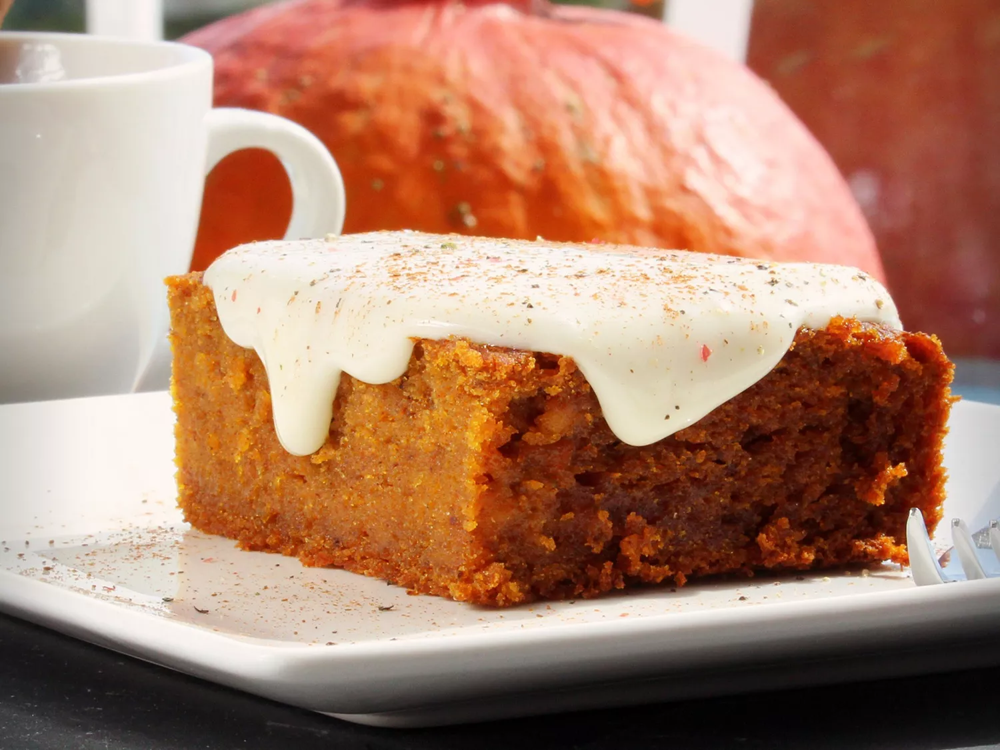

Pumpkin Squares

Description
A cake version of pumpkin pie without the crust. Goes great with a homemade cream-cheese frosting
Serving size: 1 9x13-inch pan
Ingredients
- 1 (15 ounce) can pumpkin puree
- 2 cups white sugar
- 1 cup vegetable oil
- 4 large eggs
- 2 cups all-purpose flour
- 2 teaspoons ground cinnamon
- 2 teaspoons baking powder
- 1 teaspoon baking soda
- ½ teaspoon ground cloves
- ½ teaspoon ground ginger
- ½ teaspoon ground nutmeg
- ½ teaspoon salt
Steps
- Preheat the oven to 350 degrees F (175 degrees C). Grease a 9x13-inch baking pan.
- Mix pumpkin, sugar, oil, and eggs together in a mixing bowl until smooth.
- Sift flour, cinnamon, baking powder, baking soda, cloves, ginger, nutmeg, and salt together in a separate bowl. Stir flour mixture into the pumpkin mixture until well combined. Spread evenly into the prepared pan.
- Bake in the preheated oven until top until tops spring back when lightly pressed, 25 to 30 minutes.
- Remove from the oven and cool completely before cutting into 24 squares.